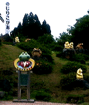

私も入っています。。
全国かえる奉賛会 全国かえる奉賛会に入会するには、自分のホームページに、上のバナーを貼り付けるだけ。どんどん入会しましょー。大王様に会うには、上の絵をクリック。ずずっと奥に写真館があるぞ。 |
|
【かえる古新聞】
|
|
【カエル速報】 1.カエルグッズ 2.カエルリンク 3.国家健全化計画 4.謎の髭男 5.とっくりくん 6.街頭で見た蛙 7.カエルショップ 8.奉納カエル絵馬 9.カエル・コスプレ 10.カエルな表紙 |
| 大王様へのメール |
奉賛会推薦菓子
かえる饅頭 この欄に紹介するカエル物品や書籍について情報を待ってます。みんなで掘り起こそう、カエル土産。かえる産品を奨励しよう！使うほど安く良くなるカエル品 |
|
|
国内初のカエル大群落と認定

|
|
|
 |
|
|
小さな山のような盛り上がった場所に、高さ１０メートルを越す巨大なカエル座像を中心に、周囲におびただしいカエル置物たちが林立している場所に出たのです。いったい、これは何のために！周囲に説明板もなく、遊園地のパンフレットを見ても、何の説明もない、まったく謎のカエル山です。
昔からそこにあって地元の民にとっては、普通なのだろうかー。それとも竹の子の如く勝手にカエルが生えてきたっちゃろうか？
宮崎県民からの情報を待つ
【げこげこ大王７世】届いたパンフレットによると、この遊園地の名称は、のじりとぴあ、といい、宮崎県にあるようだ。パンフレットの写真を鑑定中だが、なるほど、このカエル山については、どこにも解説がないのだ。遊園地経営者の趣味で、こんなカエル山を作ったのだろうか。でも、理由がどうあれ、大王様はうれしいぞ。さあ、夏休みは、カエルがいなくて、ネズミとか子象とかがたむろする、みょーちきりんな遊園地に行くのはやめて、家族そろって、のじりとぴあに行こう。宮崎県民の情報を待つ。
最大規模のカエル群落と確認
【全国かえる奉賛会】全国かえる奉賛会は、しっぽ隊長同志記者が確認した、宮崎県のカエル山を、平成時代前期における最大規模のカエル山として、カエル史跡に認定することとした。多数のカエル学者の研究論文を待つ。かえる饅頭に続き『がま饅頭』
【埼玉発=謎の大学院生けろけろ同志記者】筑波山には、がままんじゅうも売っていて、専門店まであってすごいです。”元祖がままんじゅう”元祖ですよ元祖！！！。こちらにくることがあったらぜひお土産にがままんじゅうを買ってください筑波山でしか売っていません。東京駅から高速バスに乗れば直通ですよ。１時間に１本ですけどね。『がま饅頭』も食べたいぞー
【げこげこ大王７世】かえる饅頭に続く、銘菓がままんじゅう。うれしいなー、高速バスで続々、つくば市に行こう。これはデパートに頼んで、全国かえる銘菓特選とか、銘打ち特産品企画をやってほしいぞ。奇特なデパートの出現を待つ。ＷＡ！ＷＡ！ＷＡ！ を見よう
【福岡発=げこげこ大王７世】 インターネット版テレホンショッキング ＷＡ！ＷＡ！ＷＡ！ で、このページの謎について赤裸々に語ってきました(笑)| 編集げこげこ後記◆世の中にはカエルな人がたくさんいる。でも多くのカエル主義者はつつましく生きているのだが、のじりとぴあ経営者のように、自分の遊園地にどーんとカエル山を築いてしまうひともいる◆いいなー、なにからなにまでカエルな遊園地に改造すると、もっと凄くて素晴らしいとおもうぞ。 |